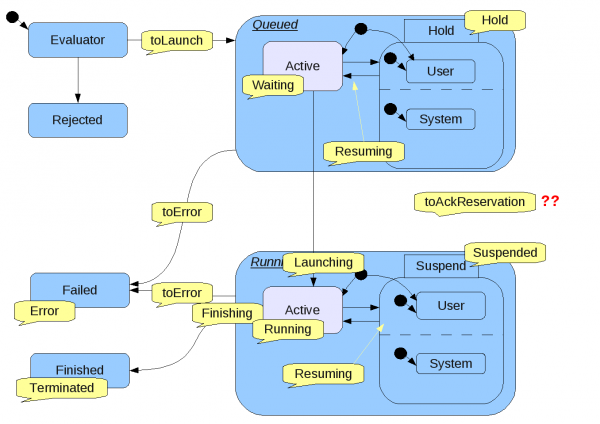
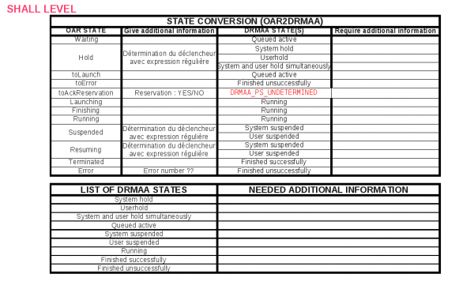
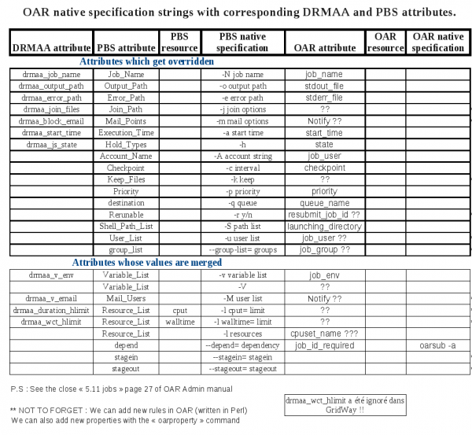

DRMAA-C
From WikiOAR
Student: Iheb Khemissi
Advisor: Olivier Richard Co-Advisor: Bruno Bzeznik
Contents |
Student: Things to do before starting
- Play with OAR through live CD by example : Live
- play with RESTfullAPI (we'll use oarapi)
- Study DRMAA: reference site
- Documents (have particulary interest to GDF 133, GDF 130 and GDF 117)
- Drmaa-C for PBS-pro form Fedstage
- Casper project implementation
- Drmaa-c in Torque's source early version from Fedstage team ?
Project's specifications
The goal is to develop a library which expose pbs-api (pbs_connect, pbs_submit and so on) to be linked with pbs_drmaa and use oarapi as backend via glib-json and libcurl (for communication layer).
How to start the project
Roadmap (and Timeline)
- select a DRMAA-C library (pbs_drmaa_1.0 from Fedstage ?)
- prepare a work environnement (pbs_drmaa-1.0, glib-json, lib-curl...)
TODO list
Advisor
Links to look at
Achieved Work
- Conversion of OAR states to DRMAA states (OAR2DRMAA)
  Equivalence between OAR_n_DRMAA states
Equivalence between OAR_n_DRMAA states
 OAR STATES to DRMAA STATES
- Conversion of DRMAA and PBS attributes to OAR (DRMAAnPBS2OAR)
 Translation of DRMAA and PBS attributes to OAR

{kind=link}
{kind=link}
{kind=link}
{kind=link}